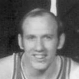

“But the one thing that Mike never was is political. I think in today's era, the NBA player has an even greater podium if he chooses to use it. And with Barack Obama being the first black President, it's a great forum. I think that would separate him from anybody who's done this.”

What Ray Allen has said about other NBA players and coaches
14 quotes from Ray Allen about 19 other people around the NBA, newest first. Each one links to its original source.
Best quotes
Ray Allen on career, Hall of Fame class:
“I will say that up to this point in my career and my life and to be where I am, it’s been a magic carpet ride. I remember watching Jason Kidd and wanting to be like Grant Hill. I cut Grant Hill’s hair in Nike camp. He was my counselor.”
Ray Allen:
“Dwyane doesn't eat any vegetables, no greens, no salad, no nothing. Chris Andersen , it is all one tattoo, believe it or not. Mario Chalmers and I grew up together. I've known him since he was a little kid. Our fathers served in the military together.”
What NBA players and coaches have said about Ray Allen →
Quotes per season
Ray Allen talks most about
 Ray Allen on George Karl2 quotes
Ray Allen on George Karl2 quotes Ray Allen on Kevin Garnett2 quotes
Ray Allen on Kevin Garnett2 quotes Ray Allen on Paul Pierce2 quotes
Ray Allen on Paul Pierce2 quotes- Barack Obama1 quote
- Bob Hill1 quote

Bob Weiss1 quote Chris Andersen1 quote
Chris Andersen1 quote Danny Ainge1 quote
Danny Ainge1 quote- Denzel Washington1 quote
 Doc Rivers1 quote
Doc Rivers1 quote Erik Spoelstra1 quote
Erik Spoelstra1 quote Grant Hill1 quote
Grant Hill1 quote
2024-25
1 quote“I think, for the most part, time has passed, and it’s that idea of thought that as you age, you make amends with your past follies and you forgive old enemies [Paul Pierce and Kevin Garnett],”
2022-23
1 quoteOf course, more than 20 seasons of playing college and professionally combined meant a lot of coaches have impacted Allen’s basketball prowess.
“When I’m saying things it's Coach (Jim) Calhoun, it’s Doc Rivers, it’s Erik Spoelstra, George Karl, Bob Weiss and Bob Hill. It’s Jeff Lynch. my high school coach. It’s every coach that ever touched hands on me,”
2020-21
1 quote“It’s going to take, specifically Harden, because now you got Kyrie who’s primarily a ball handler, both of them to figure how do we share the responsibility and how do we operate as a team? If they’re willing to do that, it could be amazing what they accomplish. But if not, it could be a train wreck.”
2019-20
1 quote“I had a conversation with (Ainge) and I told him this was my last-ditch effort. I would’ve went back,”
2018-19
1 quoteAllen's first reference to the Celtics drew loud cheers from fans seated in the balcony.
“In my 12th year, I paired up with a couple of Hall of Famers in Paul Pierce and Kevin Garnett,”
2017-18
4 quotes“But when we started playing, [Denzel] started shooting the ball, and the ball was going in,”
In an interview to promote the book, co-written with Michael Arkush, Allen said the Bucks would have won a championship if he, Cassell and Robinson had stayed together.
“Yeah, and it was broken apart in part because of George’s and my relationship,”
Ray Allen on career, Hall of Fame class:
“I will say that up to this point in my career and my life and to be where I am, it’s been a magic carpet ride. I remember watching Jason Kidd and wanting to be like Grant Hill. I cut Grant Hill’s hair in Nike camp. He was my counselor.”
“One thing I talk about in the book is about what Michael Jordan said that’s important, ‘when you win one [championship] its great, but winning two is difficult,’”
2012-13
4 quotesRay Allen:
“Dwyane doesn't eat any vegetables, no greens, no salad, no nothing. Chris Andersen , it is all one tattoo, believe it or not. Mario Chalmers and I grew up together. I've known him since he was a little kid. Our fathers served in the military together.”
Ray Allen:
“LeBron, in my career, shares more than anyone I know. Not just basketball. Off court, too. He shares his sponsorships. He's a great gift-giver.”
“But the one thing that Mike never was is political. I think in today's era, the NBA player has an even greater podium if he chooses to use it. And with Barack Obama being the first black President, it's a great forum. I think that would separate him from anybody who's done this.”
His friction with Rondo was apparent, but he appears prepared to move on from that as well.
“When you ask me about Rondo, the only thing I'm going to think of is the guy who came to the house asking for my mom's lobster pasta,”
2010-11
1 quoteRay Allen on if Reggie Miller really wanted him to break his record:
“That is like the alter ego on the golf course when you hit a great shot or make a birdie and the real guy says, ‘Oh great shot’ but his alter ego comes out and he says, ‘Damn it!’”